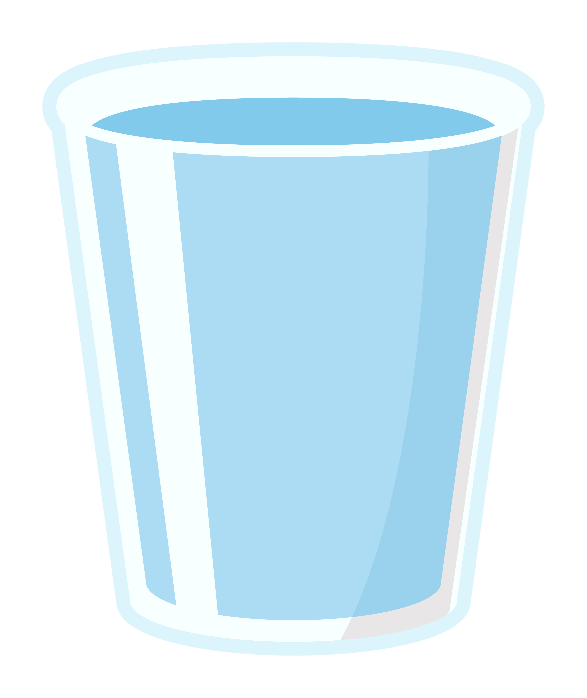
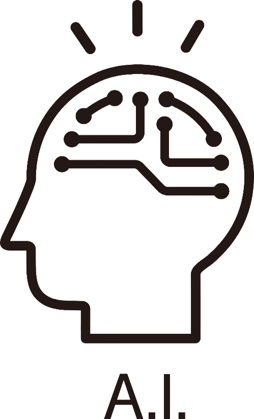

BETA
AI MODEL
【Beta】濁度（NTU）AI予測ツール
水サンプルの写真を利用して、濁度（NTU）の予測に挑戦する実験的なAIツールです。
このAIモデルの詳しい情報については、このリンクを参照してください。

1. 水を採取
調査対象の水サンプルをコップなどの容器に採取します。
2. 写真を撮影
白い背景であること、透明のコップに入っていること、十分な照明条件を揃えた水サンプルを撮影します。
詳しい情報については、撮影ガイドを参照してください。

3. AIに送信
AIモデルが画像から濁度（NTU）を予測します。
AI PREDICTION
AI水質測定ツール
AI水質測定ツール （ベータ版）
写真から水の濁り（NTU）を推定します
お願い
コップに採取した水サンプルを、白い紙などを背景にした撮影をお願いします。より安定した判定につながります。
AIモデルを読み込み中...
-- NTU
ご注意
このツールは、写真から目に見える「透明度（濁り）」のみを推定します。飲用や遊泳の安全性を保証するものではありません。
Beta版について： このAIによる予測値は研究・実験目的の参考情報です。公的な水質測定結果や安全性の判断を保証するものではありません。
研究へのご協力をお願いします！
コップに採取した水サンプルを白い背景で撮影して送信することで、AIの精度向上にご協力いただけます。 AIモデルの改善にご協力いただける方は、ぜひ以下のフォームにお答えください。
DATA ENTRY